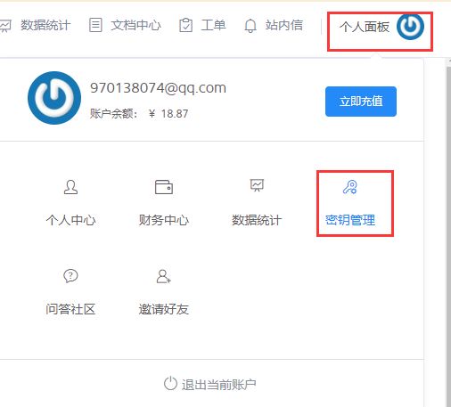

七牛云配置
七牛云是一个对象存储的云服务平台。可以方便的存储一些图片和视频文件。对于一些中小型的公司，把多媒体文件存储在七牛云上是一个比较好的选择。因为技术不需要太负担文件存储的风险，以及如何做cdn加速，以及防盗链和图片的一些处理等。费用也不是很高。因此比较推荐使用。
创建空间：
登录七牛云后，创建空间。示例如下：

获取access_key和secret_key：

在网站中使用七牛存储文件：
在网站中使用七牛，可以直接把一些图片和视频文件直接发送给服务器。需要做以下配置：
- 安装
Python的sdk：pip install qiniu。 - 编写获取
uptoken的接口：在后端代码中，写好一个接口，用来获取uptoken的。
@app.route('/uptoken/')
def uptoken():
access_key = '你的AccessKey'
secret_key = '你的SecretKey'
q = qiniu.Auth(access_key,secret_key)
bucket = 'hyvideo'
token = q.upload_token(bucket)
return jsonify({"uptoken":token})
- 在前端添加
JS的SDK：七牛为JavaScript提供了一个专门用来上传文件的接口。把以下文件引入到html代码中：
<script src="https://cdn.staticfile.org/Plupload/2.1.1/moxie.js"></script>
<script src="https://cdn.staticfile.org/Plupload/2.1.1/plupload.dev.js"></script>
<script src="https://cdn.staticfile.org/qiniu-js-sdk/1.0.14-beta/qiniu.js"></script>
- 在前端添加
zlqiniu.js文件：这个文件是封装了七牛的初始化和配置相关的。使用这个文件可以写更少的代码来使用七牛。<script src="{{ url_for('static',filename='zlqiniu.js') }}"></script> 初始化七牛：使用以下代码初始化七牛，配置一些参数信息：
window.onload = function () { zlqiniu.setUp({ 'browse_btn': 'upload-btn', 'uptoken_url': '/uptoken/', 'success': function (up,file,info) { var url = file.name; console.log(url); } }); };对以上代码做一些解释：
- browse_btn：这个是用来绑定按钮的id的。以后点击这个按钮就可以上传文件。
- uptoken_url：这个是后台写好的获取uptoken的接口。
- success：这个是文件上传成功后执行的回调。